Eight interpretable techniques (ELA, histograms, noise, JPEG ghosts, DCT, edges and two copy-move matchers) detect and localise copy-move and splicing forgeries. The evaluation on CASIA v2.0 controls for a label leak that makes the dataset, as released, solvable without looking at the pixels.
balanced accuracy from file metadata alone on CASIA v2.0 as released (AUC 0.999). Most tampered images are TIFF files; authentic images are JPEGs, 89 % of them with standard IJG tables that no tampered JPEG uses.
| Protocol | All shortcuts |
|---|---|
| A · files as released | 0.989 |
| C · JPEG files only | 0.986 |
| B · re-encoded as JPEG Q85 | 0.797 |
| R · downscaled ×0.75, then re-encoded (main) | 0.649 |
Balanced accuracy of classifiers that see only global cues (metadata, size, compression statistics). A forensic feature counts only if it beats these under the same protocol.
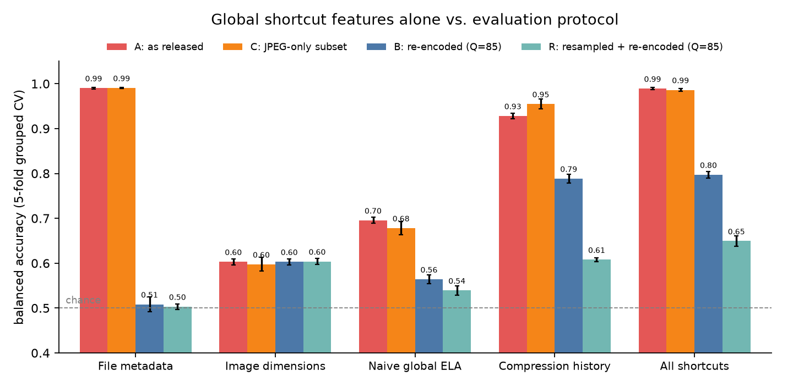
Every step on one validation copy-move image (the pasted person on the right is a mirrored copy of the one on the left), after protocol R. Each module compares a region with the rest of its own image.
The image is downscaled ×0.75 and re-saved as JPEG Q85 before any analysis, which erases file-format and compression-history shortcuts.
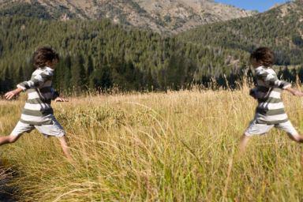
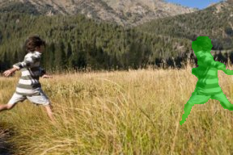
|I − JPEGq(I)| per pixel: a region with a different compression history re-compresses differently. Divided by block texture so busy areas are not mistaken for tampering.
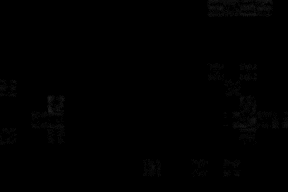
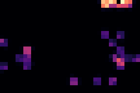
The low-contrast ELA residual is histogram-equalised; each patch's histogram is compared with the image's typical one.
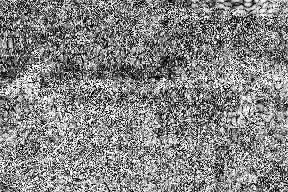
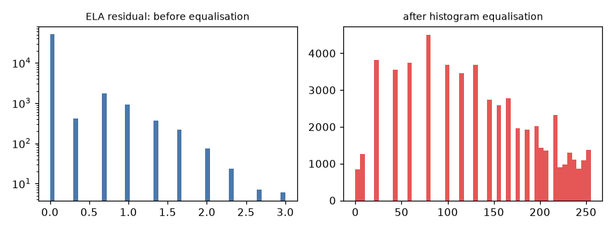
A high-pass kernel leaves only sensor noise; its robust σ is estimated per block over non-edge pixels. A region from another camera often carries different noise.
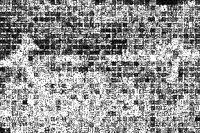
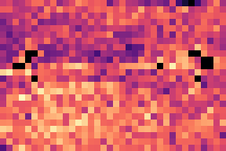
JPEG quantises 8×8 DCT coefficients, so their histogram spikes at multiples of the step; double compression leaves a periodic pattern that pasted regions lack. JPEG ghosts re-save at many qualities and look for regions that disagree.
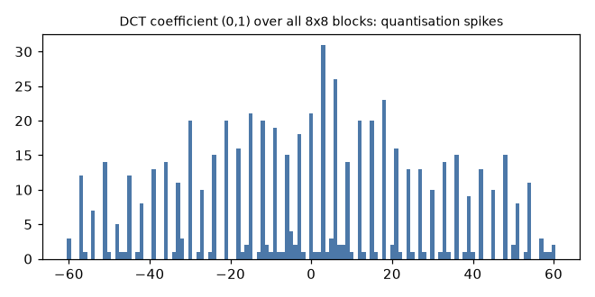
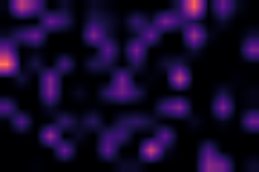
Canny edges measure boundary sharpness. SIFT keypoints are matched against the image itself and its mirror, then verified with RANSAC — here it finds both the source and the flipped copy (14 inliers).
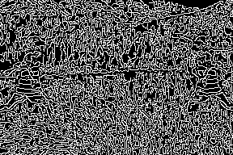
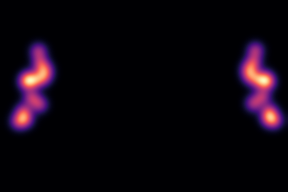
A calibrated random forest fuses 82 features into P(tampered) and abstains inside an uncertain band; gradient boosting fuses the eight maps into a mask. Verdict here: tampered (P = 0.99), likely copy-move.
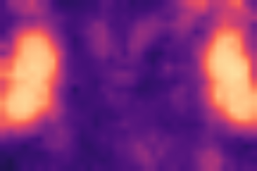
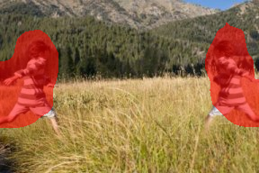
1,892 held-out images, frozen by hash before any model was trained, evaluated once; every later use is logged. Protocol R unless stated.
| At threshold 0.5 | R | B |
|---|---|---|
| Accuracy | 0.749 | 0.850 |
| Precision | 0.756 | 0.813 |
| Recall | 0.567 | 0.819 |
| F1 | 0.648 | 0.816 |
| Localisation pixel F1 | 0.198 | 0.308 |
| Deployed detector (R) | authentic | tampered | uncertain |
|---|---|---|---|
| truly authentic (1,123) | 619 | 13 | 491 |
| truly tampered (769) | 126 | 222 | 421 |
Robust to re-saving: AUC ≥ 0.78 down to JPEG quality 50; a social-media-style upload costs 0.04. Main weaknesses: same-history splices, low-detail images, self-similar scenes (all 13 false alarms had copy-move matches).
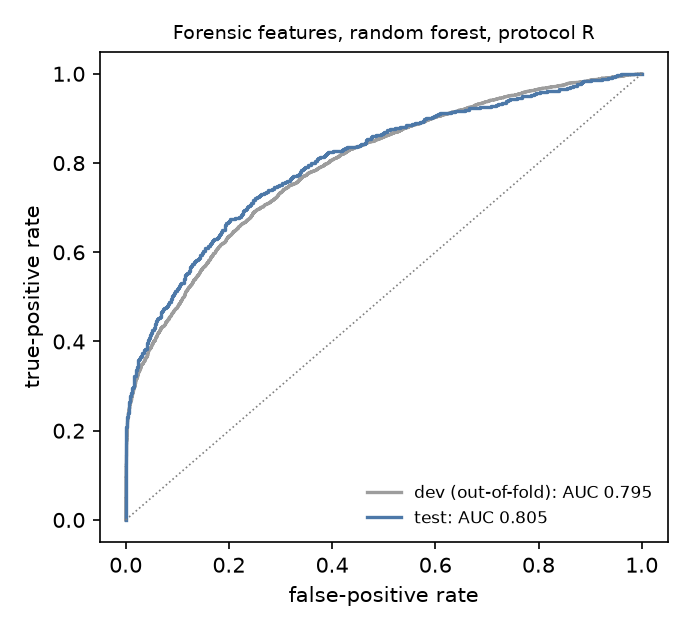
A pretrained ResNet-18 on ELA images, same splits and protocols, pre-registered and evaluated once.
| Test AUC | ELA-CNN | Classical |
|---|---|---|
| A · files as released | 0.994 | 0.981 |
| B · re-encoded | 0.811 | 0.920 |
| R · strict | 0.770 | 0.805 |
| MICC-F220 (R) | 0.529 | 0.972 |
On the released files the shortcut features alone reach 1.000. Under R the CNN trails by 0.036 [0.005, 0.067] and is not significantly better than a shortcut SVM; on MICC-F220 its AUC is consistent with chance.
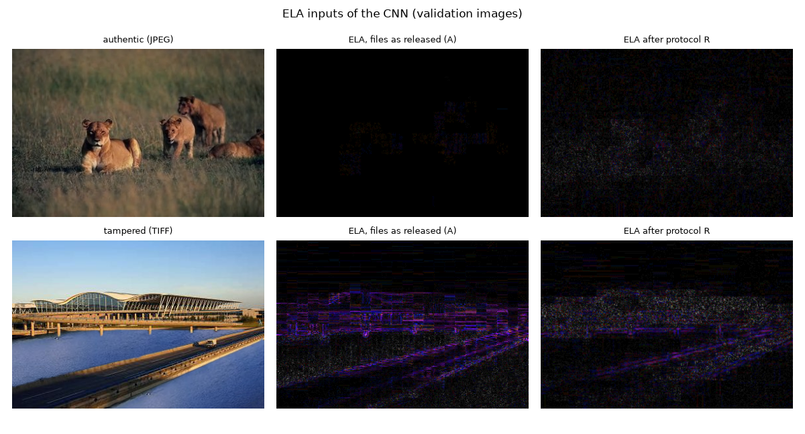
209 automated tests cover the modules on synthetic forgeries with known regions, the protocols, the split invariants, the statistics and the interface.
git clone https://github.com/Smit2102/image-forgery-detection.git cd image-forgery-detection python3 -m venv .venv && .venv/bin/pip install -r requirements.txt # place CASIA v2.0 at CASIA2/, then run the pipeline scripts in order (see README) .venv/bin/python detect.py photo.jpg # one image -> verdict, mask, overlay, report.json .venv/bin/streamlit run app/Home.py # interactive tool at http://localhost:8510
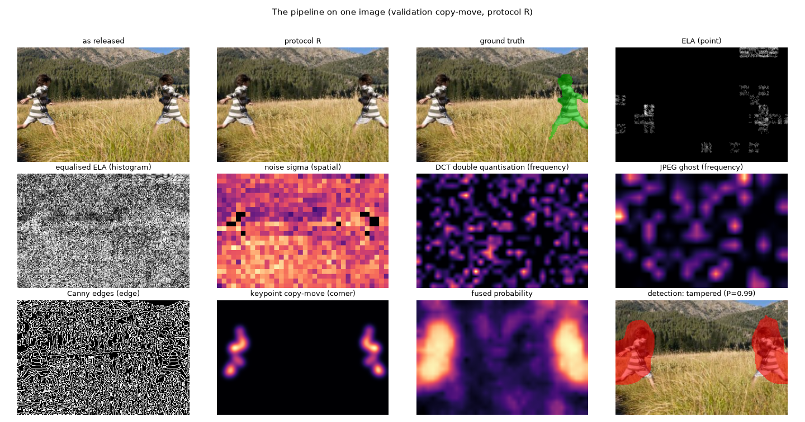